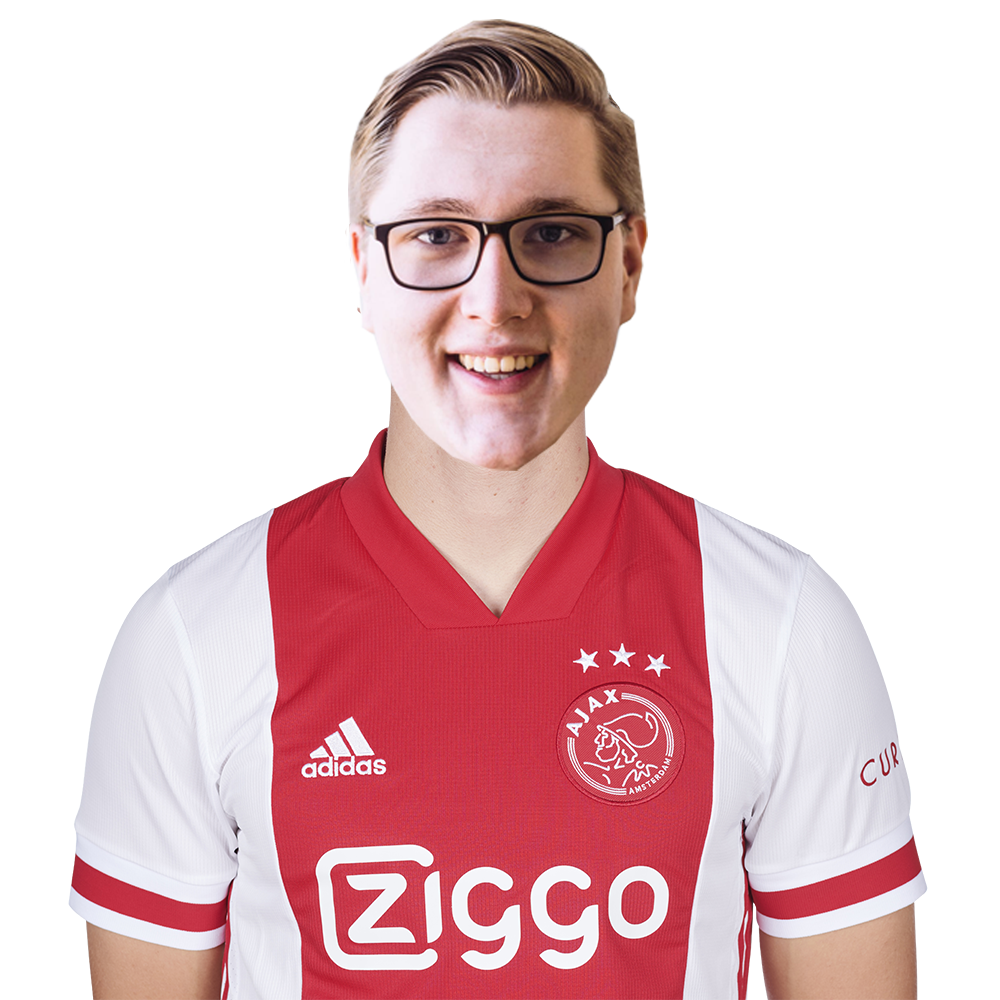
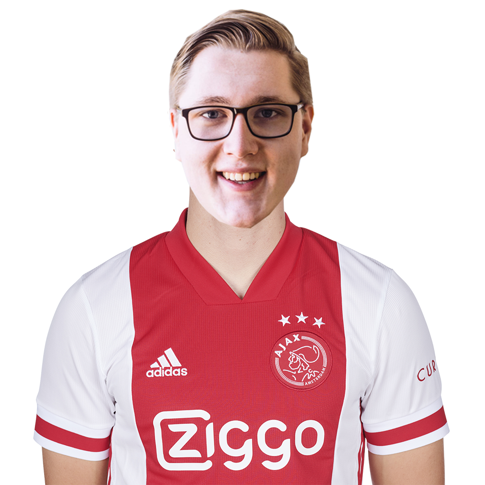

24
Danny de Vries
Team-codeur

Daley Blind traint weer volledig mee met Ajax 1. In de oefenwedstrijd Ajax - Hertha BSC van disndag 25 augustus...

In '14 Questions' leggen we Nico Tagliafico 14 vragen en dilemma's voor. Kiest hij voor Messi of Maradona?
#Tagliafico
24
Danny de Vries
Team-codeur
| # | Club | G | P | D |
|---|---|---|---|---|
| 1 | Feyenoord | 4 | 10 | 7 |
| 2 | Heerenveen | 4 | 10 | 5 |
| 3 | Vitesse | 4 | 9 | 5 |
| 4 | Ajax | 4 | 9 | 4 |
| 5 | FC Twente | 4 | 8 | 4 |
| 6 | PSV | 3 | 7 | 3 |
| 7 | FC Groningen | 4 | 6 | -2 |
| 8 | FC Utrecht | 3 | 5 | 2 |
| 9 | PEC Zwolle | 4 | 5 | 2 |
| 10 | VVV Venlo | 4 | 4 | 0 |
| Erik ten Hag | Hoofdtrainer |
| Christian Poulsen | Assistent trainer |
| Winston Bogarde | Assistent trainer |
| Micheal Reiziger | Assistent trainer |
| Richard Witschge | Lid-technische staf |
| Anton Scheuntjens | Keeperstrainer |